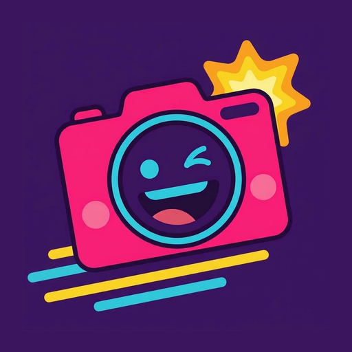

Snapter
友だちより先に撮れ！
全員に同じお題がランダムで出ます。本物をいちばん早く撮った人がラウンドの勝者。AIジャッジがすべての写真をチェックするので、画面や印刷物は認められません。
- 同じ部屋の友だちとパーティー：クラシック、ブリッツ、チーム戦。ひねりの効いたルールとパワーアップつき
- クリエイティブ：お題は1つ、みんなのベストショット、AIのスコア、そして部屋のみんなの投票
- デイリーチャレンジ：世界共通のクリエイティブなお題が1つ、写真は1枚、自分の順位をチェック
- ソロラッシュ：10個のお題をタイムアタック、毎週のガントレット、そして自分のゴースト
- レベル、クエスト、Snap Passのシーズンで、ロッカーに入る報酬をゲット
- アカウント不要、広告なし、遊ぶために買うものなし
ホストする人向けのオプション、Host Pass（サブスクリプション）：さらに多くのモード（チェーン、妨害、インポスター、デュエル、トーナメントなど）、すべてのパック、より大きなルーム、より長いゲーム。ルームのほかの全員は無料で遊べます。コインは、遊んで貯めても購入してもOK。ショップのコスメやSnap Pass Premiumと交換できます。
iPhone・iPad向けにApp Storeで近日公開。ご質問はサポートへ。